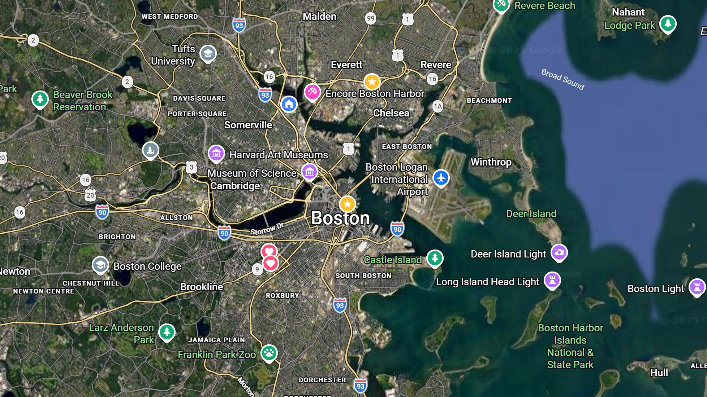
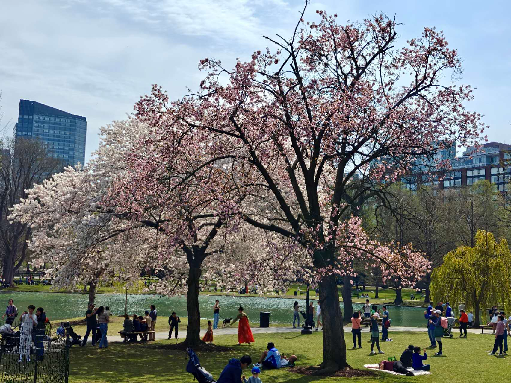
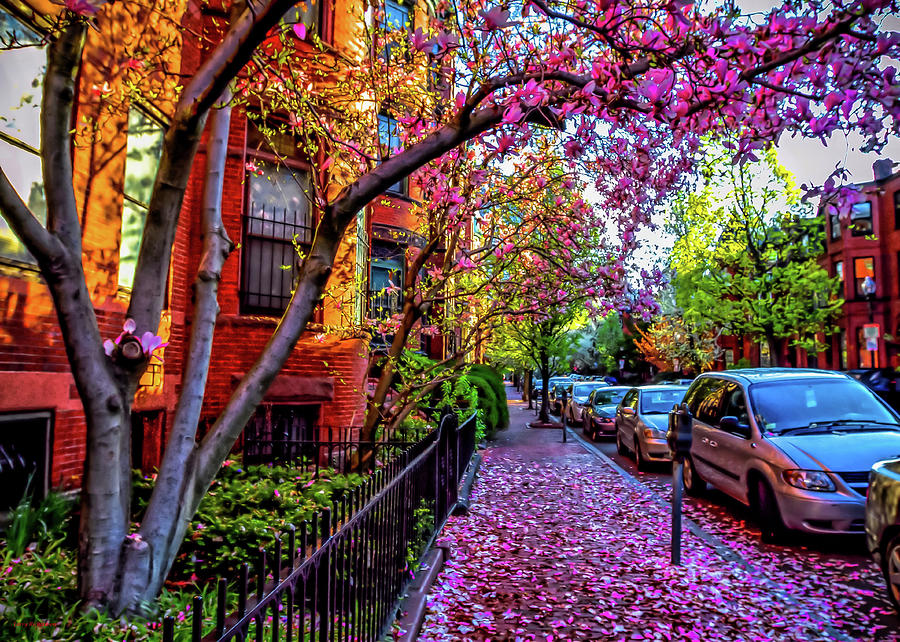
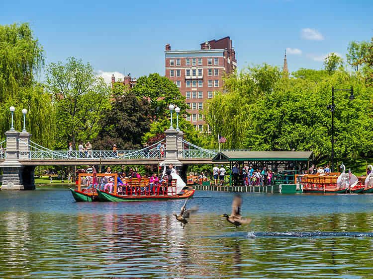
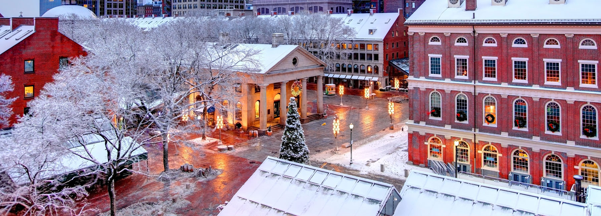
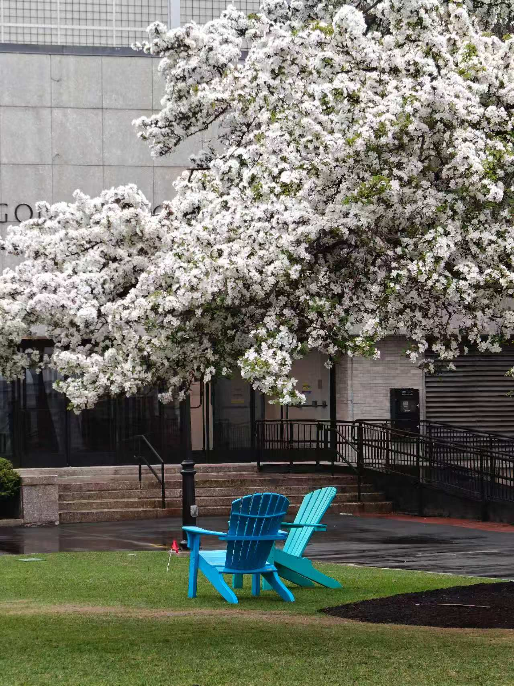
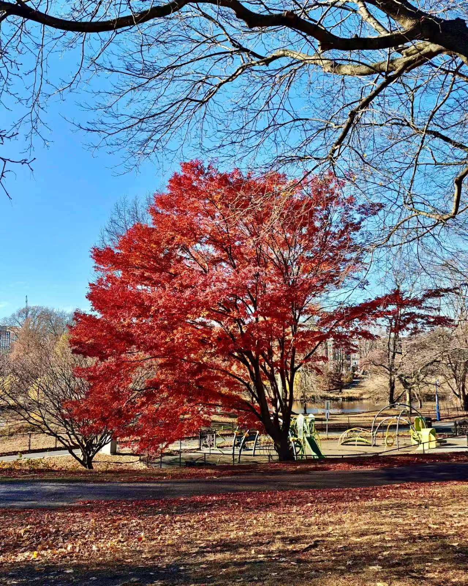

Boston is one of the oldest cities in the United States, known for its rich history, academic excellence, and cultural diversity. The city is home to world-class universities like Harvard, MIT, and Northeastern, which attract students from all over the world.
In addition to its educational environment, Boston offers a vibrant lifestyle with beautiful parks, historical landmarks, and a strong sense of community. Students can enjoy seasonal events, walk along the Charles River, and experience all four seasons in a safe and welcoming city.

Boston is located in the northeastern United States, on the coast of Massachusetts Bay, facing the Atlantic Ocean. The city covers about 89 square miles (232 km²) and consists of 23 neighborhoods including Back Bay, Allston, and Chinatown.
Its coastal location gives it easy access to beaches, nearby towns, and beautiful views of the harbor. It’s about a 4-hour drive from New York City and 1 hour from Providence, Rhode Island.
Boston has a humid continental climate with four distinct seasons:

🌸 Visit Boston Public Garden for cherry blossoms and swan boats.

🏖 Recommendation: Take a trip to Cape Cod for beaches, seafood, and summer activities.

🍁 Recommendation: Explore New Hampshire to experience breathtaking fall foliage.
⛷ Head to Killington in Vermont — one of the largest ski resorts on the East Coast.
💡 Tip: Bring a warm coat and boots for winter, and enjoy the beautiful fall scenery in October!





This is a short video I recorded to introduce how Boston’s MBTA subway works, including the Green Line and how students can use it for daily travel.
📺 Captions are available in the built-in player settings for accessibility.